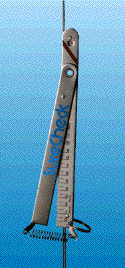

Rig Tension Meter
A yacht's rig works best when the mast is set up correctly and the shrouds are precisely tensioned to support it. A poorly-supported mast can dramatically affect the yacht's performance.
- Sails cannot deliver optimum power
- Wrongly-tensioned rigging may cause premature wire failure
- Mast may collapse
Product Specifications
| SureCheck Type | Wire Diameter (mm) | Article Number | Relative Accuracy | Absolute Accuracy |
|---|---|---|---|---|
| 2 - 4 | 2.5 - 3 - 4 | 20908 | +/- 2% | +/- 10% |
| 4 - 6 | 4 - 5 - 6 | 20900 | +/- 2% | +/- 10% |
| 6 - 8 | 6 - 7 - 8 | 20902 | +/- 2% | +/- 10% |
| 8 - X | 8 - 9 - 10 | 20904 | +/- 2% | +/- 10% |
| Pocket (fits all) | 20909 |
click here for instructions